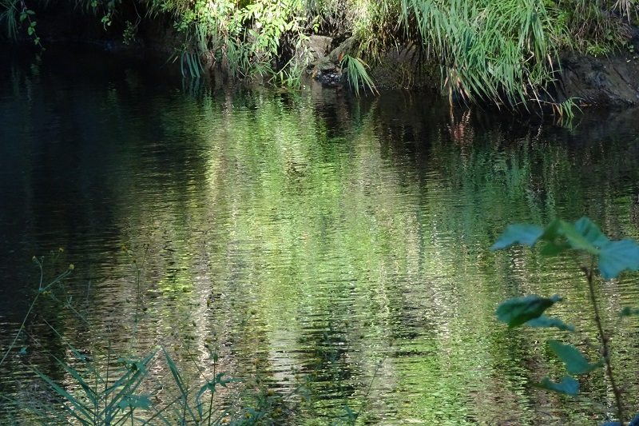

ディーリアス: 弦楽四重奏曲 ハ短調
ディーリアス初期のの弦楽四重奏曲で、ライプツィヒ音楽院で短期間学んでいたときに聴いたグリーグの弦楽四重奏曲に刺激を受けて作曲した初期作品とのこと。作曲者もお蔵入りにしていたが、前半2楽章の楽譜が最近になってオークションを通して発見され、蘇ったらしい。だから今のところこのアルバムが唯一の演奏である。既に20代後半であり、前年にはグリーグを驚かせたという傑作『フロリダ組曲』も作曲しているので、習作といってよいかどうか分からないけれども、まだ自身のスタイルを確立する前の作であることは明らかだと思う。また、少なくとも外面上グリーグの影響があるようにも思えない。第1楽章の冒頭の雰囲気は北欧風でとても好みなのだが、続く単調な伴奏の刻みの上に開始されるテーマがいかにも習作という感じで残念なところ。第2楽章は後年の『弦楽四重奏曲 ホ短調』（第3楽章に付けられたタイトルから『去り行くつばめ』("Late Swallows")として知られる曲）の同じく第2楽章に流用されている。その際、細部に手が入れられているが、構成などほぼ原形のままなので聞き流していると違いに気付かない程度。古典的なスケルツォで、中間部はとりわけ美しい。後にこの楽章だけ再利用したのも当然と思わせる。後続の2楽章を含め全体的にまだディーリアスらしさは少なく、普通のロマン派的な作風なのだが、ひとつの通過点として興味深い。
Frederick Delius: Quartet in C Minor
Villiers Quartet
(2022)
この曲から約30年後の円熟期に作られた『弦楽四重奏曲 ホ短調』については、後にエリック・フェンビーが『弦楽オーケストラのためのソナタ』の題で合奏用に編曲している。その第3楽章『去り行くつばめ』（最初はこの楽章のみが編曲された）だけの演奏は色々あるが、編曲者自身の指揮による全4楽章の演奏が残されており貴重である。少し古い録音がノスタルジックだ。ちなみに第3楽章の冒頭、何か似た曲を最近聴いたと思ったが、ここで少し前に取り上げたレフラーの『単一楽章の弦楽五重奏曲』と最初の3音くらいまで、和声を含め同じであることに気付いた。もちろんその後はまったく似た所はなく、だからどうというわけでもないが。ディーリアスの方は執拗にこのテーマにこだわってまったりと、しかし悲痛な思いを見え隠れさせながら進行する。フェンビーの指揮は気持ち速めのテンポで安い感傷に陥らないのがいい。
Frederick Delius: Sonata for String Orch.
(String Quartet in E Minor
arr. Eric Fenby)
Bournemouth Sinfonietta
Eric Fenby (cond)
(ca. 1979)

(Oct. 28, 2023)